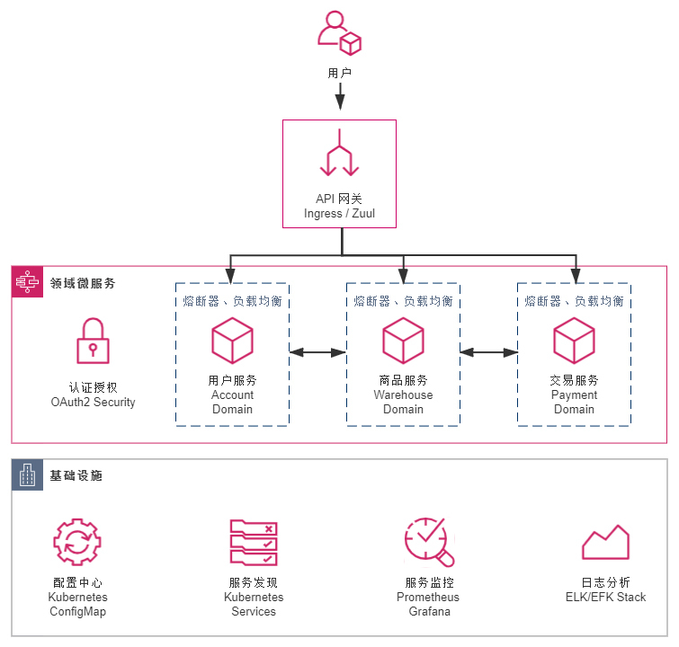

- 00 _导读 _ 什么是“The Fenix Project”？.md
- 00 开篇词 _ 如何构建一个可靠的分布式系统？.md
- 01 _ 原始分布式时代：Unix设计哲学下的服务探索.md
- 02 _ 单体系统时代：应用最广泛的架构风格.md
- 03 _ SOA时代：成功理论与失败实践.md
- 04 _ 微服务时代：SOA的革命者.md
- 05 _ 后微服务时代：跨越软件与硬件之间的界限.md
- 06 _ 无服务时代：“不分布式”云端系统的起点.md
- 07 _ 远程服务调用（上）：从本地方法到远程方法的桥梁.md
- 08 _ 远程服务调用（下）：如何选择适合自己的RPC框架？.md
- 09 _ RESTful服务（上）：从面向过程编程到面向资源编程.md
- 10 _ RESTful服务（下）：如何评价服务是否RESTful？.md
- 11 _ 本地事务如何实现原子性和持久性？.md
- 12 _ 本地事务如何实现隔离性？.md
- 13 _ 全局事务和共享事务是如何实现的？.md
- 14 _ 分布式事务之可靠消息队列.md
- 15 _ 分布式事务之TCC与SAGA.md
- 16 _ 域名解析系统，优化HTTP性能的第一步.md
- 17 _ 客户端缓存是如何帮助服务器分担流量的？.md
- 18 _ 传输链路，优化HTTP传输速度的小技巧.md
- 19 _ 如何利用内容分发网络来提高网络性能？.md
- 20 _ 常见的四层负载均衡的工作模式是怎样的？.md
- 21 _ 服务端缓存的三种属性.md
- 22 _ 分布式缓存如何与本地缓存配合，提高系统性能？.md
- 23 _ 认证：系统如何正确分辨操作用户的真实身份？.md
- 24 _ 授权（上）：系统如何确保授权的过程可靠？.md
- 25 _ 授权（下）：系统如何确保授权的结果可控？.md
- 26 _ 凭证：系统如何保证与用户之间的承诺是准确完整且不可抵赖的？.md
- 27 _ 保密：系统如何保证敏感数据无法被内外部人员窃取滥用？.md
- 28 _ 传输（上）：传输安全的基础，摘要、加密与签名.md
- 29 _ 传输（下）：数字证书与传输安全层.md
- 30 _ 验证：系统如何确保提交给服务的数据是安全的？.md
- 31 _ 分布式共识（上）：想用好分布式框架，先学会Paxos算法吧.md
- 32 _ 分布式共识（下）：Multi Paxos、Raft与Gossip，分布式领域的基石.md
- 33 _ 服务发现如何做到持续维护服务地址在动态运维中的时效性？.md
- 34 _ 路由凭什么作为微服务网关的基础职能？.md
- 35 _ 如何在客户端实现服务的负载均衡？.md
- 36 _ 面对程序故障，我们该做些什么？.md
- 37 _ 要实现某种容错策略，我们该怎么做？.md
- 38 _ 限流的目标与模式.md
- 39 _ 如何构建零信任网络安全？.md
- 40 _ 如何实现零信任网络下安全的服务访问？.md
- 41 _ 分布式架构中的可观测到底说的是什么？.md
- 42 _ 分析日志真的没那么简单.md
- 43 _ 一个完整的分布式追踪系统是什么样子的？.md
- 44 _ 聚合度量能给我们解决什么问题？.md
- 45 _ 模块导学：从微服务到云原生.md
- 46 _ 容器的崛起（上）：文件、访问、资源的隔离.md
- 47 _ 容器的崛起（下）：系统、应用、集群的封装.md
- 48 _ 以容器构建系统（上）：隔离与协作.md
- 49 _ 以容器构建系统（下）：韧性与弹性.md
- 50 _ 应用为中心的封装（上）：Kustomize与Helm.md
- 51 _ 应用为中心的封装（下）：Operator与OAM.md
- 52 _ Linux网络虚拟化（上）：信息是如何通过网络传输被另一个程序接收到的？.md
- 53 _ Linux网络虚拟化（下）：Docker所提供的容器通讯方案有哪些？.md
- 54 _ 容器网络与生态：与CNM竞争过后的CNI下的网络插件生态.md
- 55 _ 谈谈Kubernetes的存储设计理念.md
- 56 _ Kubernetes存储扩展架构：一个真实的存储系统如何接入或移除新存储设备？.md
- 57 _ Kubernetes存储生态系统：几种有代表性的CSI存储插件的实现.md
- 58 _ Kubernetes的资源模型与调度器设计.md
- 59 _ 透明通讯的涅槃（上）：通讯的成本.md
- 60 _ 透明通讯的涅槃（下）：控制平面与数据平面.md
- 61 _ 服务网格与生态：聊聊服务网格的两项标准规范.md
- 63 _ 基于Spring Boot的单体架构.md
- 64 _ 基于Spring Cloud的微服务架构.md
- 65 _ 基于Kubernetes的微服务架构.md
- 66 _ 基于Istio的服务网格架构.md
- 67 _ 基于云计算的无服务架构.md
- 春节特别放送（上）_ 有的放矢，事半功倍.md
- 春节特别放送（下）_ 积累沉淀，知行合一.md
- 用户故事 _ 詹应达：持续成长，不惧未来.md
- 结束语 _ 程序员之路.md
- 结课测试 _ 一套习题，测出你的掌握程度.md
65 _ 基于Kubernetes的微服务架构
你好，我是周志明。
我在第5讲中，曾经把2017年描述为是“后微服务时代”的开端，这是容器生态发展历史中具有里程碑意义的一年。
在这一年，长期作为Docker竞争对手的RKT容器一派的领导者CoreOS，宣布放弃自己的容器管理系统Fleet，未来将会把所有容器管理的功能转移到Kubernetes之上去实现。
在这一年，容器管理领域的独角兽Rancher Labs，宣布放弃其内置了数年的容器管理系统Cattle，提出了“All-in-Kubernetes”战略，从2.0版本开始把1.x版本能够支持多种容器管理工具的Rancher，“反向升级”为只支持Kubernetes一种容器管理系统。
在这一年，Kubernetes的主要竞争者Apache Mesos在9月正式宣布了“Kubernetes on Mesos”集成计划，由竞争关系转为对Kubernetes提供支持，使其能够与Mesos的其他一级框架（如HDFS、Spark 和Chronos，等等）进行集群资源动态共享、分配与隔离。
在这一年，Kubernetes的最大竞争者Docker Swarm的母公司Docker，终于在10月被迫宣布Docker要同时支持Swarm与Kubernetes两套容器管理系统，事实上承认了Kubernetes的统治地位。
至此，这场已经持续了三、四年时间，以Docker Swarm、Apache Mesos与Kubernetes为主要竞争者的“容器战争”就终于有了明确的结果，Kubernetes登基加冕是容器发展中一个时代的终章，也将是软件架构发展下一个纪元的开端。
需求场景
当引入了基于Spring Cloud的微服务架构后，小书店Fenix’s Bookstore初步解决了扩容缩容、独立部署、运维和管理等问题，满足了产品经理不断提出的日益复杂的业务需求。
可是，对于团队的开发人员、设计人员、架构人员来说，并没有感觉到工作变得轻松，微服务中的各种新技术名词，比如配置中心、服务发现、网关、熔断、负载均衡等，就够一名新手学习好长一段时间；从产品角度来看，各种Spring Cloud的技术套件，比如Config、Eureka、Zuul、Hystrix、Ribbon、Feign等，也占据了产品的大部分编译后的代码容量。
而之所以在微服务架构里，我们选择在应用层面，而不是基础设施层面去解决这些分布式问题，完全是因为由硬件构成的基础设施，跟不上由软件构成的应用服务灵活性的无奈之举。
不过，当Kubernetes统一了容器编排管理系统之后，这些纯技术性的底层问题，就开始有了被广泛认可和采纳的基础设施层面的解决方案。为此，Fenix’s Bookstore也迎来了它在“后微服务时代”中的下一次架构演进，这次升级的目标主要有两点。
- 目标一：尽可能缩减非业务功能代码的比例。
在Fenix’s Bookstore中，用户服务（Account）、商品服务（Warehouse）、交易服务（Payment）三个工程是真正承载业务逻辑的，认证授权服务（Security）可以认为是同时涉及到了技术与业务，而配置中心（Configuration）、网关（Gateway）和服务注册中心（Registry）则是纯技术性。我们希望尽量消除这些纯技术的工程，以及那些依附在其他业务工程上的纯技术组件。
- 目标二：尽可能在不影响原有代码的前提下完成迁移。
得益于Spring Framework 4中的Conditional Bean等声明式特性的出现，近年来新发布的Java技术组件中，声明式编程（Declarative Programming）已经逐步取代了命令式编程（Imperative Programming），成为主流的选择。
在声明式编程的支持下，我们可以从目的而不是过程的角度，去描述编码意图，让代码几乎不会与具体的技术实现产生耦合。而如果要更换一种技术实现，我们也只需要调整配置中的声明即可。
那么，从升级结果来看，如果仅以Java代码的角度来衡量，本工程与此前基于Spring Cloud的实现没有任何差异，两者的每一行Java代码都是一模一样的。
而实际上，真正的区别在于Kubernetes的实现版本中，直接删除了配置中心、服务注册中心的工程，在其他工程的pom.xml中，也删除了如Eureka、Ribbon、Config等组件的依赖。取而代之的是新增了若干以YAML配置文件为载体的Skaffold和Kubernetes的资源描述，这些资源描述文件，将会动态构建出DNS服务器、服务负载均衡器等一系列虚拟化的基础设施，去代替原有的应用层面的技术组件。升级改造之后的应用架构如下图所示：

运行程序
在已经部署Kubernetes集群的前提下，你可以通过以下几种途径运行程序，浏览最终的效果：
- 直接在Kubernetes集群环境上运行：
工程在编译时，就已经通过Kustomize产生出集成式的资源描述文件，你可以通过该文件直接在Kubernetes集群中运行程序：
# 资源描述文件
$ kubectl apply -f https://raw.githubusercontent.com/fenixsoft/microservice_arch_kubernetes/master/bookstore.yml
注意，在命令执行的过程中，一共需要下载几百MB的镜像，尤其是当Docker中没有各层基础镜像缓存时，请你根据自己的网速保持一定的耐心。等未来GraalVM对Spring Cloud的支持更成熟一些后，你也可以考虑采用GraalVM来改善这一点。
好，当所有的Pod都处于正常工作状态后，你可以在浏览器访问：http://localhost:30080，系统预置了一个用户（user:icyfenix，pw:123456），你也可以注册新用户来测试。
- 通过Skaffold在命令行或IDE中以调试方式运行：
一般开发基于Kubernetes的微服务应用，是在本地针对单个服务编码、调试完成后，通过CI/CD流水线部署到Kubernetes中进行集成的。如果只是针对集成测试，这并没有什么问题，但同样的做法应用在开发阶段就相当不方便了，我们不希望每做一处修改，都要经过一次CI/CD流程，这会非常耗时而且难以调试。
Skaffold是Google在2018年开源的一款加速应用在本地或远程Kubernetes集群中，构建、推送、部署和调试的自动化命令行工具。对于Java应用来说，它可以帮助我们做到监视代码变动，自动打包出镜像，将镜像打上动态标签并更新部署到Kubernetes集群，为Java程序注入开放JDWP调试的参数，并根据Kubernetes的服务端口自动在本地生成端口转发。
以上都是根据skaffold.yml中的配置来进行的，开发时Skaffold会通过dev指令来执行这些配置，具体的操作过程如下所示：
# 克隆获取源码
$ git clone https://github.com/fenixsoft/microservice_arch_kubernetes.git && cd microservice_arch_kubernetes
# 编译打包
$ ./mvnw package
# 启动Skaffold
# 此时将会自动打包Docker镜像，并部署到Kubernetes中
$ skaffold dev
服务全部启动后，你可以在浏览器访问：http://localhost:30080，系统预置了一个用户（user:icyfenix，pw:123456），你也可以注册新用户来测试。
另外，由于面向的是开发环境，基于效率原因，我并没有像传统CI工程那样，直接使用Maven的Docker镜像来打包Java源码，而这就决定了在构建Dockerfile时，我们要监视的变动目标将是Jar文件，而不是Java源码。Skaffold的执行是由Jar包的编译结果来驱动的，它只在进行Maven编译、输出了新的Jar包后才会更新镜像。
这样做的原因，一方面是考虑到在Maven镜像中打包，不方便利用本地的仓库缓存，尤其在国内网络中，速度实在难以忍受；另一方面，是我其实并不希望每保存一次源码时，都自动构建和更新一次镜像，毕竟比起传统的HotSwap或者Spring Devtool Reload来说，更新镜像重启Pod是一个更加重负载的操作。未来CNCF的Buildpack成熟之后，应该可以绕过笨重的Dockerfile，对打包和容器热更新做更加精细化的控制。
另外，如果你有IDE调试的需求，我推荐你采用Google Cloud Code（Cloud Code同时提供了VS Code和IntelliJ Idea的插件）来配合Skaffold使用，毕竟这是同一个公司出品的产品，搭配起来能获得几乎与本地开发单体应用一致的编码和调试体验。
技术组件
Fenix’s Bookstore采用基于Kubernetes的微服务架构，并采用Spring Cloud Kubernetes做了适配，其中主要的技术组件包括以下几种。
- 环境感知
Spring Cloud Kubernetes本身引入了Fabric8的Kubernetes Client作为容器环境感知，不过引用的版本很旧，比如Spring Cloud Kubernetes 1.1.2中，采用的是Fabric8 Kubernetes Client 4.4.1，Fabric8提供的兼容性列表中，这个版本只支持到Kubernetes 1.14，虽然实测在1.16上也能用，但是在1.18上就无法识别到最新的Api-Server。
因此Maven引入依赖时，你需要手工处理，排除旧版本，引入新版本（本工程采用的是4.10.1）。
- 配置中心
采用Kubernetes的ConfigMap来管理，通过Spring Cloud Kubernetes Config自动将ConfigMap的内容注入到Spring配置文件中，并实现动态更新。
- 服务发现
采用Kubernetes的Service来管理，通过Spring Cloud Kubernetes Discovery自动将HTTP访问中的服务转换为FQDN。
- 负载均衡
采用Kubernetes Service本身的负载均衡能力实现（就是DNS负载均衡），就可以不再需要Ribbon这样的客户端负载均衡了。Spring Cloud Kubernetes从1.1.2开始，也已经移除了对Ribbon的适配支持，也（暂时）没有对其代替品Spring Cloud LoadBalancer提供适配。
- 服务网关
网关部分仍然保留了Zuul，没有采用Ingress来代替。这里我主要有两点考虑，一是Ingress Controller不算是Kubernetes的自带组件，它可以有不同的选择（如KONG、Nginx、Haproxy等），同时也需要独立安装，因此作为演示工程，出于环境复杂度最小化的考虑，我没有使用Ingress；二是Fenix’s Bookstore的前端工程是存放在网关中的，移除了Zuul之后也仍然要维持一个前端工程的存在，不能进一步缩减工程数量，也就削弱了移除Zuul的动力。
- 服务熔断
这里仍然采用Hystrix，Kubernetes本身无法做到精细化的服务治理，包括熔断、流控、监视，等等，我们将在基于Istio的服务网格架构中解决这个问题。
- 认证授权
这里仍然采用Spring Security OAuth 2.0，Kubernetes的RBAC授权可以解决服务层面的访问控制问题，但Security是跨越了业务和技术的边界的，认证授权模块本身仍然承担着对前端用户的认证、授权职责，这部分是与业务相关的。
协议
课程的工程代码部分采用Apache 2.0协议进行许可。在遵循许可的前提下，你可以自由地对代码进行修改、再发布，也可以将代码用作商业用途。但要求你：
- 署名：在原有代码和衍生代码中，保留原作者署名及代码来源信息；
- 保留许可证：在原有代码和衍生代码中，保留Apache 2.0协议文件。
© 2019 - 2023 Liangliang Lee. Powered by gin and hexo-theme-book.